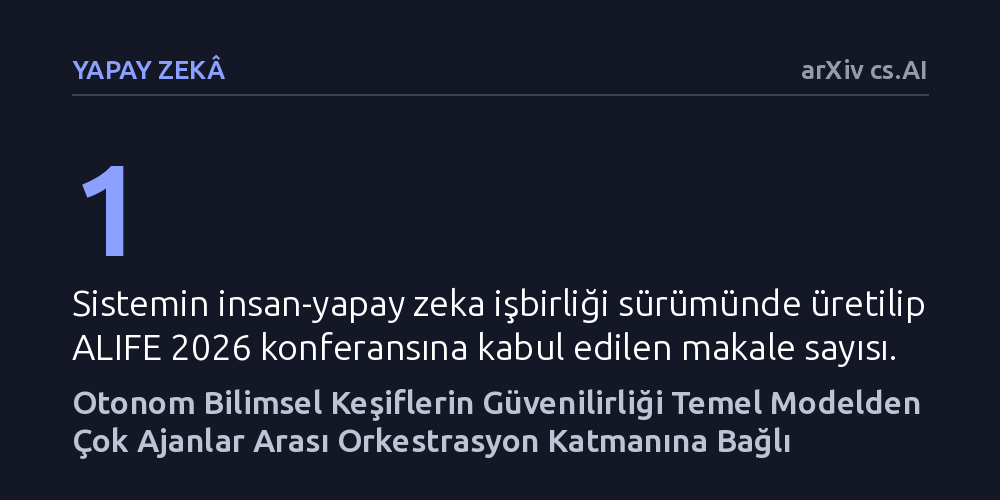

YAPAY-ZEKA · arXiv cs.AI · 2026-10-16
Araştırmacılar, kodlama ajanlarını çok aşamalı bir orkestrasyonla yöneterek otonom bilimsel araştırma yapmanın yollarını inceledi. Geliştirilen sistemin ALIFE 2026 konferansına kabul edilen bir makale ürettiği ve güvenilir otonominin temel modellerden çok orkestrasyon katmanına dayandığı gösterildi.
Yapay zekanın bilimsel araştırma yapabilmesi için tek başına daha büyük modellere değil, araştırma sürecini adım adım denetleyip koordine eden çoklu ajan mimarilerine ihtiyaç olduğunu gösteriyor.

Bilgisayar ortamında yürütülen bilimsel araştırmalarda kod yazmak, deneyleri çalıştırmak ve sonuçları çözümlemek araştırmacıların zamanının büyük kısmını alır. Son yıllarda geliştirilen kodlama ajanları bu görevleri parça parça başarıyla yerine getirebilse de, bir araştırmayı baştan sona bağımsız şekilde yürütmekte yetersiz kalmaktadır. Buradaki asıl zorluk sadece kod üretmek değil; yeni bir bilimsel hipotez kurup bunu doğrulayacak kapsamlı deneyleri planlayabilmektir.
Mevcut tam otonom araştırma sistemleri, dar bir fikir üretme yarıçapına sıkışmakta ve karşılaştıkları ilk yerel başarıya odaklanan miyop arama dinamikleri nedeniyle uzun vadeli hedefleri kaçırabilmektedir. Araştırmacıların amacı, yapay zeka ajanlarının bu sınırlarını aşarak insan araştırmacılarla ortak çalışabilen ya da araştırmayı güvenilir şekilde uçtan uca yürütebilen çok ajanlı yeni bir mimari geliştirmektir.
Araştırmacılar, bu darboğazı aşmak için 'The Agentic Scientist' adını verdikleri dağıtık bir boru hattı tasarladı. Sistem, bilimsel araştırma sürecini tek bir modelin omuzlarına yüklemek yerine sekiz belirgin aşamaya ayırmaktadır: görev taslağı oluşturma, fikir üretimi, planlama, yalıtılmış ortamda deney yürütme, sonuçları toplama, temel kıyaslama ve ablasyon testleri kurma, deney sonrası analiz ve akademik rapor yazımı.
Sistemin yönetimini, paralel çalışan araştırma ajanlarını koordine eden bir üst kontrolcü (meta-controller) üstlenmektedir. Her aşamada ajanlar, ürettikleri kod ve bulguları belirlenen ölçütlere göre kendi kendilerine doğrulamaktadır; böylece doğrulanmayan adımlar bir sonraki aşamaya aktarılmaz. Bu modüler yapı, sistemin farklı yazılım ortamlarına ve değerlendirme ölçütlerine kolayca uyarlanabilmesini sağlamaktadır.
Geliştirilen sistem iki temel çalışma kipiyle sınandı. İlk olarak sistem, insan araştırmacılara eşlik eden bir ortak çalışma aracı olarak kullanıldı. Bu işbirlikçi geliştirme sürecinde hazırlanan bir araştırma makalesi, yapay yaşam alanındaki saygın etkinliklerden biri olan ALIFE 2026 konferansına kabul edildi. Bu bulgu, sistemin insan gözetiminde akademik düzeyde kabul edilebilir bilimsel çıktılar üretebildiğini gösterdi.
İkinci denemede sistem, makine öğrenimi alanındaki açık uçlu problem çözme görevlerine tamamen otonom olarak yönlendirildi. Yapılan bileşen çıkarma deneyleri dikkat çekici bir sonucu ortaya koydu: Otonom bilimsel araştırmaların güvenilirliği yalnızca kullanılan temel dil modelinin büyüklüğüne ve yeteneğine değil, ajanlar arasındaki koordinasyonu ve denetimi sağlayan orkestrasyon katmanına doğrudan bağlıdır.
Bu çalışma, yapay zekanın araştırmalardaki rolünün pasif bir kod tamamlayıcıdan, araştırma süreçlerini birlikte yürüten bir ortağa doğru genişleyebileceğini ortaya koymaktadır. Ancak sonuçları değerlendirirken temkinli olmak gerekir. Yazarların da vurguladığı üzere, tam otonom ajanlar henüz insanların sahip olduğu geniş fikir üretme ufkuna ulaşamamış durumdadır ve kolayca yerel çözümlere takılabilmektedir.
Ayrıca bu çalışma henüz bağımsız hakem heyetinden geçmemiş bir önbaskıdır ve başarısı şimdilik tek bir konferans yayını ile belirli makine öğrenimi simülasyonlarıyla sınırlıdır. Yine de elde edilen bulgular, yapay zekayla bilimsel keşif süreçlerini hızlandırmada temel modelleri büyütmek kadar, araştırma disiplinini kopyalayan denetimli çoklu ajan mimarileri kurmanın belirleyici olduğunu göstermektedir.